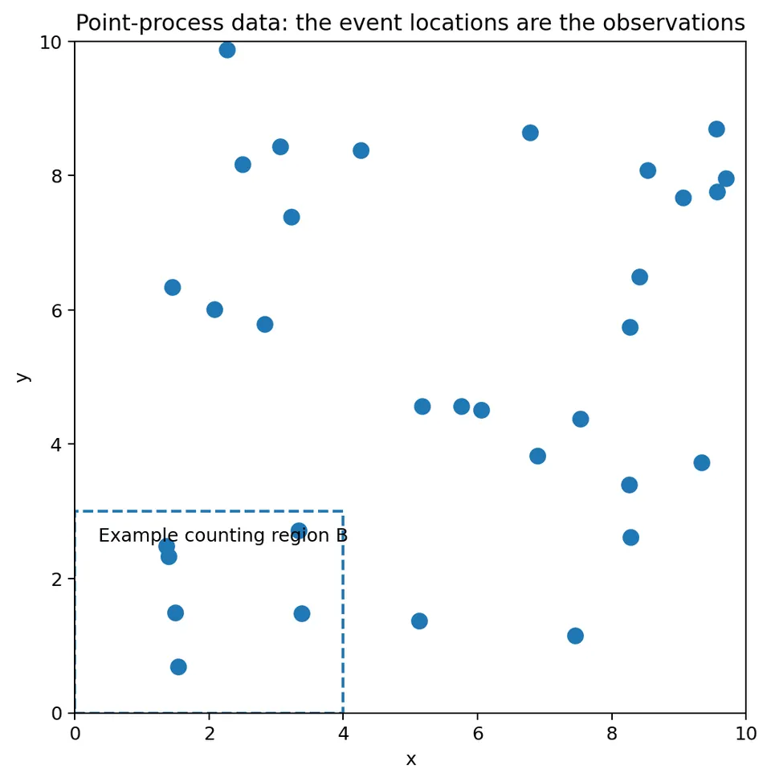
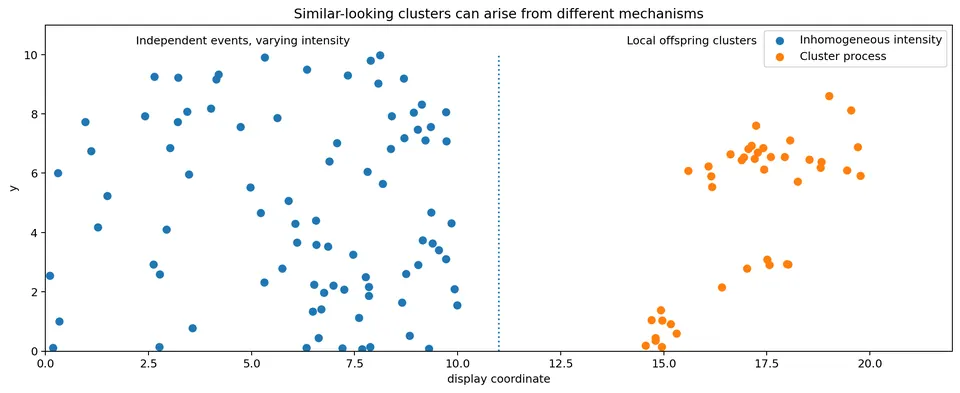
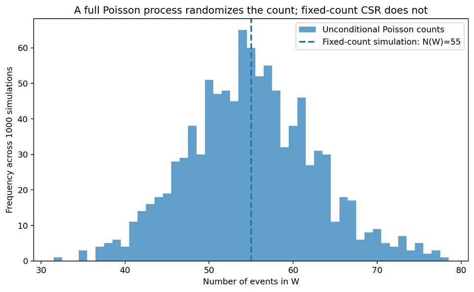
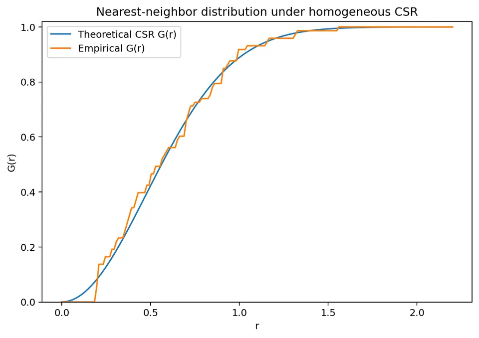
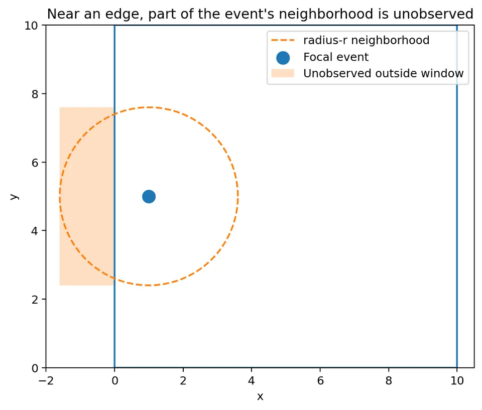
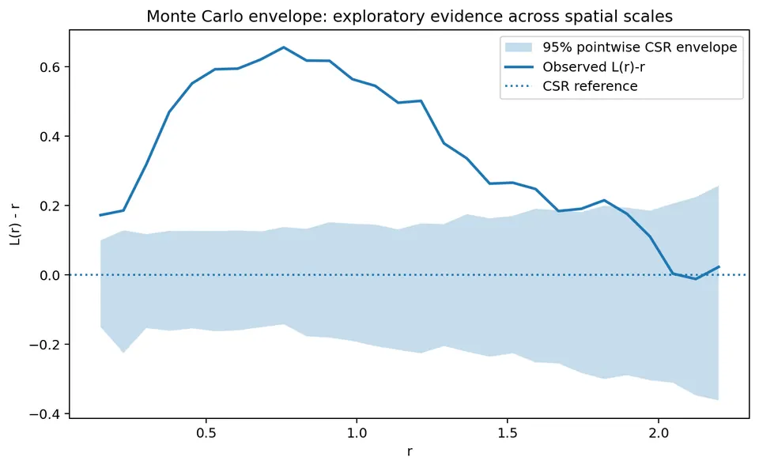
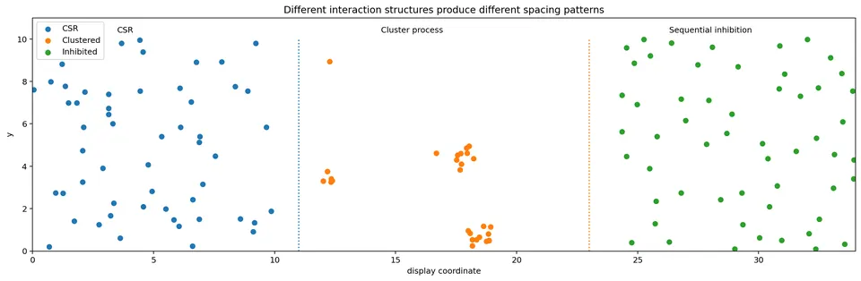
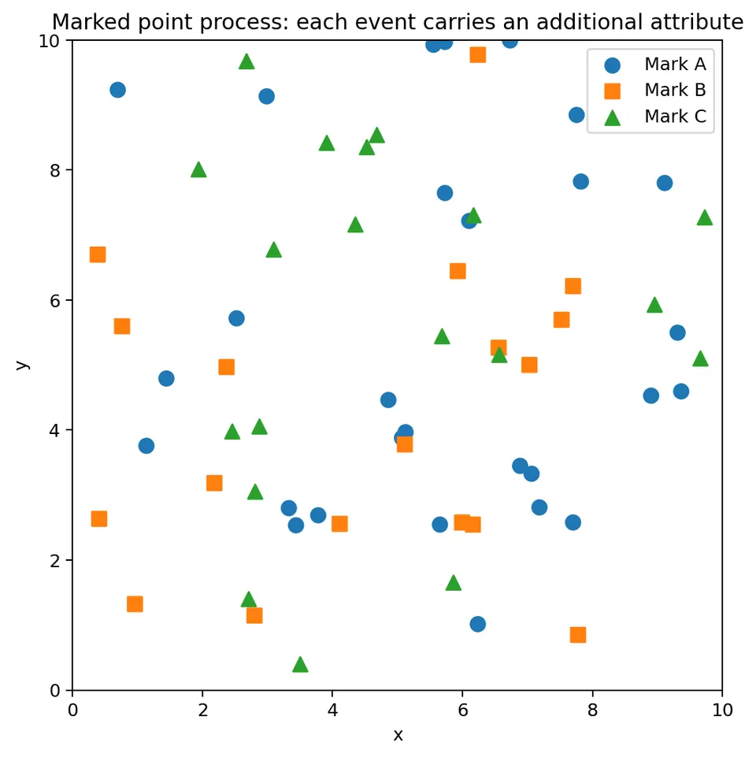

A spatial point process is used when the observed data are the event locations themselves.
This differs from geostatistics.
In geostatistics, locations are usually fixed and a value is observed at each location:
$$ \text{location } s_i \quad\longrightarrow\quad Z(s_i). $$
In a point process, the locations are the random outcome:
$$ \{s_1,s_2,\ldots,s_n\}. $$
Both the number of events and their positions may be random.
Examples include:
After working through this chapter, you should be able to:
Suppose events occur inside a study region $W$.
The observed pattern might be
$$ \{s_1,s_2,\ldots,s_n\}, $$
where each
$$ s_i=(x_i,y_i) $$
is an event location.
For example, if five trees are observed in a forest plot, the point pattern could be
$$ \{(1.2,3.0),(2.5,7.1),(4.8,4.4),(6.3,8.2),(8.1,2.7)\}. $$
Unlike ordinary regression, there is no fixed set of sites where a response is measured.
The event locations themselves are the outcome.

A point pattern has meaning only relative to the region in which events could have been observed.
That region is the observation window $W$.
If 20 events are observed, the interpretation is very different if the window has area 1 km$^2$ versus 100 km$^2$.
Always record:
For any region
$$ B\subseteq W, $$
define
$$ N(B) = \text{number of observed events inside }B. $$
The quantity $N(B)$ is random because another realization of the process could contain a different number of events in $B$.
Suppose the study window is a $10\times10$ square.
Let
$$ B=[0,4]\times[0,3]. $$
The area of $B$ is
$$ |B|=4\times3=12. $$
Suppose the observed pattern contains events at
$$ (1,1),\ (2,2),\ (3,1),\ (6,4),\ (8,7). $$
The first three events lie inside $B$.
Therefore
$$ \boxed{ N(B)=3 }. $$
If we repeated the underlying experiment, another realization might have
$$ N(B)=1,\quad N(B)=4,\quad N(B)=0, $$
or another count.
This is why a point process can be viewed as a random counting measure.
The intensity $\lambda(s)$ describes the expected event density around location $s$.
The fundamental relationship is
$$ E[N(B)] = \int_B\lambda(s)\,ds. $$
This relationship answers the question:
How many events should we expect inside region $B$?
For a homogeneous process,
$$ \lambda(s)=\lambda $$
is constant across the window.
Then
$$ E[N(B)] = \lambda|B|. $$
Suppose
$$ \lambda=0.2 $$
events per square kilometer.
Let
$$ |B|=12\text{ km}^2. $$
Then
$$ E[N(B)] = 0.2(12) = 2.4. $$
Therefore
$$ \boxed{ E[N(B)]=2.4 }. $$
It does not mean that 2.4 events will literally be observed.
Counts must be integers.
It means that across many hypothetical repetitions, the average count in regions of this size would approach 2.4.
For example, observed counts across repeated regions might be
$$ 2,\ 4,\ 1,\ 3,\ 2,\ldots $$
while their long-run average is about 2.4.
If $n$ events are observed in a window of area $|W|$, the natural estimator is
$$ \hat\lambda = \frac{n}{|W|}. $$
Suppose
$$ n=35 $$
events are observed in a rectangular window measuring
$$ 5\text{ km}\times4\text{ km}. $$
The area is
$$ |W|=5(4)=20\text{ km}^2. $$
Therefore
$$ \hat\lambda = \frac{35}{20} = 1.75. $$
So the estimated intensity is
$$ \boxed{ 1.75\text{ events per km}^2 }. $$
This is a sensible summary only when constant intensity is scientifically plausible.
Intensity need not be constant.
An inhomogeneous point process has
$$ \lambda(s) $$
that changes with location.
For example,
$$ \lambda(x,y) = \exp( \beta_0+\beta_1x+\beta_2y ) $$
can represent a smoothly varying spatial intensity.
Intensity can also depend on covariates such as:
Suppose
$$ \lambda(x) = \exp(-1+0.15x). $$
At
$$ x=2, $$
the intensity is
$$ \lambda(2) = \exp(-1+0.15(2)) = \exp(-0.7) \approx0.497. $$
At
$$ x=8, $$
$$ \lambda(8) = \exp(-1+0.15(8)) = \exp(0.2) \approx1.221. $$
So the expected local event density is much higher near $x=8$ than near $x=2$.
This distinction is fundamental in point-process analysis.
A map can appear clustered for two very different reasons.
Events may be conditionally independent even when intensity is high in some places and low in others.
Example:
The stores may be conditionally independent once population density and commercial opportunity are accounted for.
The occurrence of one event changes the probability of another event occurring nearby.
Examples:
These mechanisms have different scientific interpretations.

A clustered-looking map does not by itself show attraction among events.
First model or otherwise account for $\lambda(s)$.
This is the point-process analogue of separating a spatial mean trend from residual dependence in geostatistics.
The homogeneous Poisson point process is the standard reference model for complete spatial randomness (CSR) under homogeneous intensity.
It has three key properties.
For a region $B$,
$$ N(B) \sim \mathrm{Poisson}(\lambda|B|). $$
If
$$ B_1\cap B_2=\varnothing, $$
then
$$ N(B_1) $$
and
$$ N(B_2) $$
are independent.
Conditional on
$$ N(W)=n, $$
the $n$ event locations are independent and uniformly distributed over $W$.
For
$$ N(B)\sim\mathrm{Poisson}(\mu), $$
the probability of exactly $k$ events is
$$ P[N(B)=k] = e^{-\mu} \frac{\mu^k}{k!}. $$
For a homogeneous Poisson process,
$$ \mu=\lambda|B|. $$
Use
$$ \lambda=0.2 $$
and
$$ |B|=12. $$
Then
$$ \mu=0.2(12)=2.4. $$
What is the probability of observing exactly 3 events?
$$ P[N(B)=3] = e^{-2.4} \frac{2.4^3}{3!}. $$
Now
$$ 2.4^3=13.824 $$
and
$$ 3!=6. $$
Therefore
$$ P[N(B)=3] = e^{-2.4} \frac{13.824}{6}. $$
Because
$$ e^{-2.4}\approx0.09072, $$
we obtain
$$ P[N(B)=3] \approx 0.09072(2.304) $$
$$ \boxed{ P[N(B)=3]\approx0.209 }. $$
So under this model there is about a 20.9% chance of exactly 3 events in the region.
This distinction is subtle but important.
First draw
$$ N(W) \sim \mathrm{Poisson}(\lambda|W|). $$
Then, conditional on that random count, draw all event locations independently and uniformly over $W$.
Both the total count and the event positions are random.
Suppose instead we decide first that
$$ n=50 $$
and then draw exactly 50 independent uniform locations.
That simulation has the same distribution of locations as a homogeneous Poisson process conditional on
$$ N(W)=50. $$
But the count is no longer random.

If the observed count is treated as fixed by the study design, conditioning on $n$ can be appropriate.
If variability in the total count is scientifically relevant, an unconditional Poisson simulation better represents the full model.
For each event, calculate the distance to its nearest other event.
For event $i$,
$$ d_i = \min_{j\neq i} \|s_i-s_j\|. $$
Nearest-neighbor distances summarize short-range spacing.
Small nearest-neighbor distances suggest that events often have close companions.
Large nearest-neighbor distances suggest regular spacing or inhibition.
For a homogeneous planar Poisson process on an unbounded region,
$$ G(r) = P(\text{nearest-neighbor distance}\le r ) $$
is
$$ \boxed{ G(r) = 1-e^{-\lambda\pi r^2} }. $$
For the nearest neighbor to be farther than $r$, there must be no other event within a disk of radius $r$ around a typical event.
The area of that disk is
$$ \pi r^2. $$
Under a homogeneous Poisson process, the expected number of events in that disk is
$$ \lambda\pi r^2. $$
The probability of zero events is
$$ e^{-\lambda\pi r^2}. $$
Therefore
$$ P(D>r) = e^{-\lambda\pi r^2}. $$
Hence
$$ P(D\le r) = 1-e^{-\lambda\pi r^2}. $$
Suppose
$$ \lambda=0.08 $$
events per square unit.
What is the probability that the nearest neighbor is within
$$ r=2 $$
units?
Use
$$ G(2) = 1-e^{-0.08\pi(2^2)}. $$
Because
$$ 2^2=4, $$
$$ 0.08\pi(4) = 0.32\pi \approx1.0053. $$
Therefore
$$ G(2) = 1-e^{-1.0053}. $$
Since
$$ e^{-1.0053} \approx0.366, $$
we get
$$ \boxed{ G(2)\approx0.634 }. $$
Interpretation:
Under homogeneous CSR with intensity 0.08, about 63.4% of events are expected to have their nearest neighbor within 2 distance units.

The theoretical formula
$$ G(r)=1-e^{-\lambda\pi r^2} $$
assumes an unbounded plane.
Real studies use finite observation windows.
An event near the boundary has part of its surrounding neighborhood outside the observed region.
A potential nearest neighbor just outside the window would not be observed.
Naive nearest-neighbor summaries can therefore be distorted near boundaries.
Possible responses include:
Ripley's $K$ function summarizes point-pattern structure over a range of distances.
For a stationary process with intensity $\lambda$,
$$ K(r) = \frac{1}{\lambda} E[ \text{number of additional events within distance }r \text{ of a typical event} ]. $$
This definition addresses the question:
After adjusting for overall event density, how many neighboring events are found within distance $r$ of a typical event?
Under homogeneous complete spatial randomness in two dimensions,
$$ \boxed{ K_{\mathrm{CSR}}(r)=\pi r^2 }. $$
This equals the area of a circle of radius $r$.
Why?
Under CSR, the expected number of other events inside a radius-$r$ disk is
$$ \lambda\pi r^2. $$
Dividing by $\lambda$ gives
$$ K(r) = \pi r^2. $$
Compare an observed or estimated $\hat K(r)$ with
$$ \pi r^2. $$
Broadly:
$$ \hat K(r)>\pi r^2 $$
suggests more nearby event pairs than expected under CSR.
This is consistent with clustering over distances up to $r$.
Conversely,
$$ \hat K(r)<\pi r^2 $$
suggests fewer nearby pairs than expected.
This is consistent with inhibition or regular spacing over distances up to $r$.
The interpretation is scale dependent.
A process might be:
For this reason, $K$ is examined as a curve rather than at a single distance.
Ignoring edge correction for the moment, a common estimator for a window of area $A$ is
$$ \hat K(r) = \frac{A}{n(n-1)} \sum_{i=1}^n \sum_{j\neq i} I(d_{ij}\le r). $$
Here:
Suppose:
$$ A=100, $$
$$ n=5, $$
and at distance
$$ r=3 $$
there are 3 unordered event pairs within distance 3.
Because the double sum counts each pair twice,
$$ (i,j) $$
and
$$ (j,i), $$
3 unordered pairs become
$$ 6 $$
ordered pairs.
Therefore
$$ \hat K(3) = \frac{100}{5(4)}(6). $$
Since
$$ 5(4)=20, $$
$$ \hat K(3) = \frac{100}{20}(6) = 5(6) $$
$$ \boxed{ \hat K(3)=30 }. $$
Under CSR,
$$ K_{\mathrm{CSR}}(3) = \pi(3^2) = 9\pi \approx28.27. $$
Thus
$$ 30>28.27. $$
This small difference suggests slightly more nearby pairs than expected under CSR at that scale, but the calculation alone does not establish statistically significant clustering.
A key feature of Ripley's $K$ function is that it is cumulative.
If
$$ r=10, $$
the count includes all neighbors at distances
$$ 0<d\le10. $$
Therefore nearby-pair information from shorter distances contributes to every larger value of $K(r)$.
As a result, nearby points on a $K$ curve are strongly dependent.
Each radius should not be interpreted as an independent statistical test.
Consider an event near the left boundary of a rectangular study window.
A circle of radius $r$ around the event extends partly outside the observed window.
If only visible neighbors are counted, possible neighbors in the unobserved part of the circle are missed.
Ignoring this typically biases estimated pair counts downward.

Common corrections include:
No correction can recover information that was never observed. Edge correction adjusts the contribution of available information under assumptions about the observation process.
A simple border method uses only points at least distance $r$ from the window boundary as focal points.
Suppose the study window is
$$ [0,10]\times[0,10]. $$
At radius
$$ r=2, $$
a point at
$$ (1,5) $$
is only 1 unit from the left boundary.
It is excluded as a focal point for that radius.
A point at
$$ (5,5) $$
is more than 2 units from every boundary and can be retained.
Border correction reduces edge bias but also discards information.
At large $r$, very few interior focal points may remain.
For this reason, $K(r)$ should not be evaluated at arbitrarily large radii relative to the study window.
Because
$$ K_{\mathrm{CSR}}(r)=\pi r^2, $$
the CSR curve is nonlinear.
A common transformation is
$$ L(r) = \sqrt{ \frac{K(r)}{\pi} }. $$
Under CSR,
$$ L(r)=r. $$
Another common display is
$$ L(r)-r. $$
Then the CSR benchmark becomes a horizontal zero line.
Broadly:
This transformation makes departures from CSR easier to visualize, but simulation-based uncertainty is still needed.
A common point-process diagnostic compares an observed summary function with simulations from a reference model.
For example, to assess homogeneous CSR:
For each radius, one can calculate lower and upper simulated quantiles.
These bounds form a pointwise Monte Carlo envelope.

Suppose we generate
$$ M=199 $$
simulated patterns.
At radius
$$ r=2, $$
we obtain 199 simulated values
$$ \hat K_1(2),\ldots,\hat K_{199}(2). $$
A 95% pointwise envelope can be approximated using the 2.5% and 97.5% quantiles of those simulated values.
The same is done separately for every radius.
This distinction is important.
A 95% pointwise envelope controls the simulated range separately at each radius.
When many radii are examined, an observed curve may leave the envelope somewhere simply by chance.
Therefore a pointwise envelope is not automatically a 5% global test over the entire curve.
Formal global-envelope methods handle the multiple-distance problem more carefully.
For introductory analysis, pointwise envelopes remain useful exploratory diagnostics when their limitations are stated clearly.
A CSR envelope is meaningful only when homogeneous CSR is a scientifically plausible reference model.
Suppose event intensity clearly increases with population density.
Then homogeneous CSR is already wrong at the first-order level.
Comparing such a pattern with homogeneous CSR may simply rediscover the known intensity gradient.
A better reference process might be an inhomogeneous Poisson process with fitted intensity
$$ \hat\lambda(s). $$
Simulation can then address the question:
Is there extra spatial interaction beyond what the fitted intensity explains?
Some point patterns still show clustering after first-order intensity has been modeled.
A common model is the Thomas process.
One construction is:
The parent points may be latent.

A Thomas process is plausible when observed events arise around underlying cluster centers.
Examples might include:
Some processes exhibit inhibition or repulsion rather than clustering.
Examples include:
A hard-core model imposes a minimum inter-event distance
$$ h>0. $$
Then no pair can satisfy
$$ d_{ij}<h. $$
This produces more regular spacing at short distances.
More general Gibbs processes can represent softer forms of attraction or repulsion.
Suppose a hard-core model has minimum distance
$$ h=2. $$
Consider two proposed event locations:
$$ s_1=(3,4), $$
$$ s_2=(4,5). $$
Their distance is
$$ d = \sqrt{(4-3)^2+(5-4)^2} = \sqrt{1+1} = \sqrt2 \approx1.414. $$
Because
$$ 1.414<2, $$
the pair violates the hard-core constraint.
Both events cannot occur together in a pattern that satisfies this hard-core model.
A Poisson process need not be homogeneous.
For an inhomogeneous Poisson process:
$$ N(B) \sim \mathrm{Poisson} \left( \int_B\lambda(s)\,ds \right), $$
and events are conditionally independent given the intensity surface.
This matters because an inhomogeneous Poisson pattern can look highly clustered.
The visual clustering comes from variation in $\lambda(s)$ rather than event-to-event attraction.
Suppose event intensity depends on population density $x(s)$:
$$ \log\lambda(s) = \beta_0+\beta_1x(s). $$
Let
$$ \beta_0=-2 $$
and
$$ \beta_1=0.03. $$
At a location with population covariate
$$ x=20, $$
$$ \log\lambda = -2+0.03(20) = -1.4. $$
So
$$ \lambda = e^{-1.4} \approx0.247. $$
At
$$ x=60, $$
$$ \log\lambda = -2+0.03(60) = -0.2, $$
so
$$ \lambda = e^{-0.2} \approx0.819. $$
The second location therefore has much higher expected event density even without interaction.
Events can carry additional attributes called marks.
Examples include:
The marked pattern can be written
$$ \{(s_i,m_i)\}_{i=1}^n, $$
where
$$ m_i $$
is the mark attached to event $i$.

These two questions should be kept separate.
This concerns the point process itself.
Examples of tools:
This concerns dependence in the marks, conditional on or jointly with the event locations.
For example:
These require mark-specific summaries or models.
A point pattern may be CSR while its marks are strongly spatially associated, or vice versa.
Point-process intensity can reflect both the underlying event-generating process and the observation process.
Suppose wildlife sightings are collected near roads.
A high concentration of sightings near roads could mean:
Similarly, disease cases may be concentrated where more people live simply because more people are at risk.
Exposure and observation effort should therefore be considered when interpreting intensity.
A practical analysis can follow these steps.
Decide exactly what counts as one event.
Examples:
Duplicate or ambiguously defined events can change the analysis.
Record the geometry and area of $W$.
Check whether all parts were observable.
Look for:
Ask whether density depends on:
Possible examples:
Use appropriate tools such as:
Make sure boundary bias is addressed.
Simulate from the fitted reference model and compute the same summary statistic.
Do not add an interaction component merely because the raw map looks clustered.
Use simulation diagnostics, residual analysis, or held-out spatial information when possible.
In a point process, the locations themselves are random.
Counts and intensity have no clear interpretation without the region where events could have been observed.
Varying intensity can create apparent clustering without event-to-event attraction.
That is a Poisson process conditional on the total count.
Boundary truncation can reduce observed pair counts.
$K$ is cumulative and nearby radii are highly dependent.
Pointwise and simultaneous inference are not the same.
The comparison may simply detect a first-order intensity gradient.
They are separate questions.
Suppose 80 tree stems are observed in a
$$ 20\text{ m}\times20\text{ m} $$
plot.
The plot area is
$$ |W| = 20(20) = 400\text{ m}^2. $$
The homogeneous intensity estimate is
$$ \hat\lambda = \frac{80}{400} = 0.2 $$
trees per square meter.
At radius
$$ r=1, $$
CSR predicts
$$ K_{\mathrm{CSR}}(1) = \pi \approx3.142. $$
Suppose an edge-corrected estimate gives
$$ \hat K(1)=5.2. $$
The observed value is above the CSR benchmark.
Before concluding that trees attract one another, ask:
The numerical difference alone does not identify the underlying mechanism.
The logic of point-process analysis is:
$$ \text{event locations} $$
$$ \downarrow $$
$$ \text{define event + observation window} $$
$$ \downarrow $$
$$ \text{estimate/model first-order intensity} $$
$$ \downarrow $$
$$ \text{examine short- and multi-scale spacing} $$
$$ \downarrow $$
$$ \text{apply edge correction} $$
$$ \downarrow $$
$$ \text{simulate from a scientifically meaningful reference process} $$
$$ \downarrow $$
$$ \text{assess evidence for residual clustering or inhibition} $$
$$ \downarrow $$
$$ \text{fit richer cluster/inhibitory/marked models when needed}. $$
The central idea is:
First-order intensity describes where events are expected to occur; second-order structure describes how events are arranged relative to one another after that intensity structure is considered.